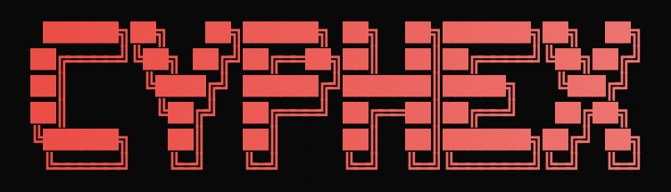
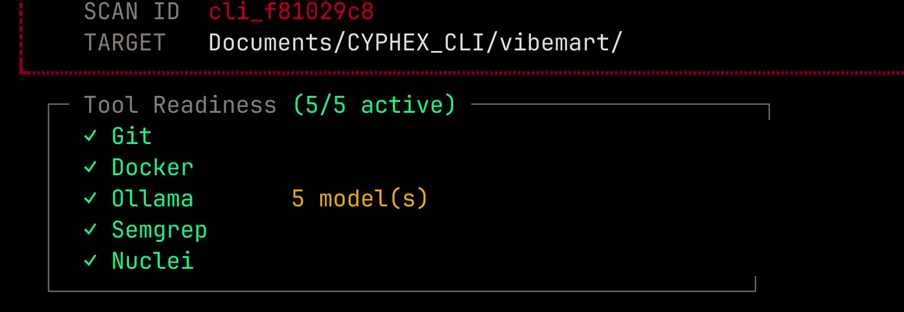
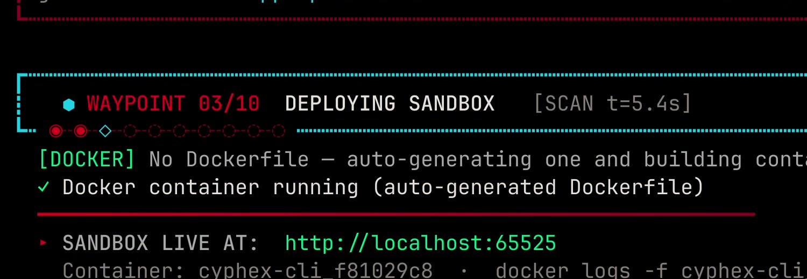
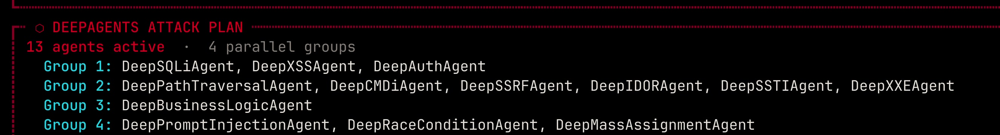
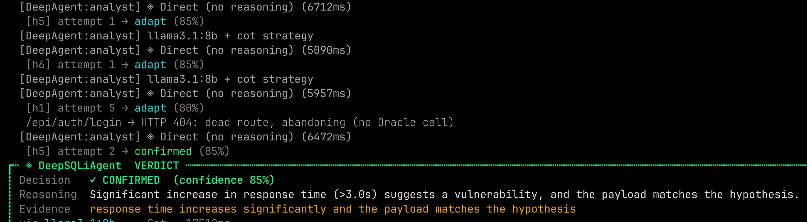
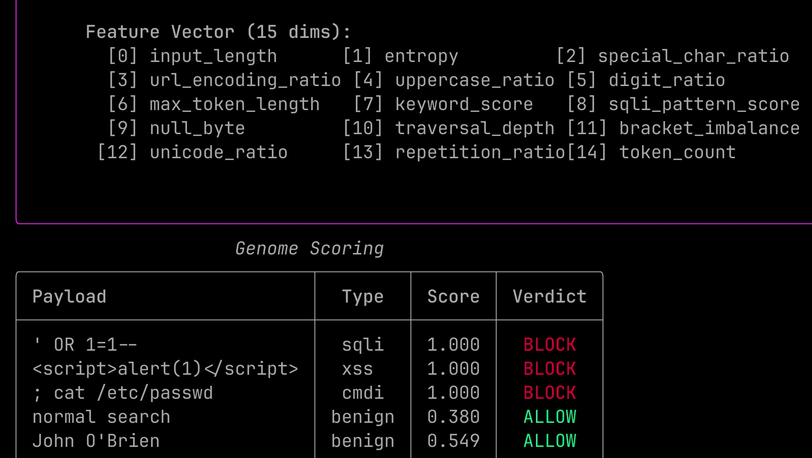
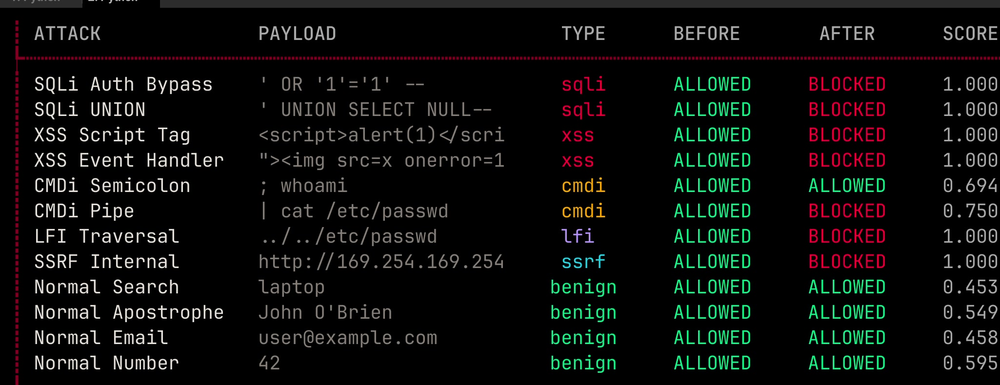
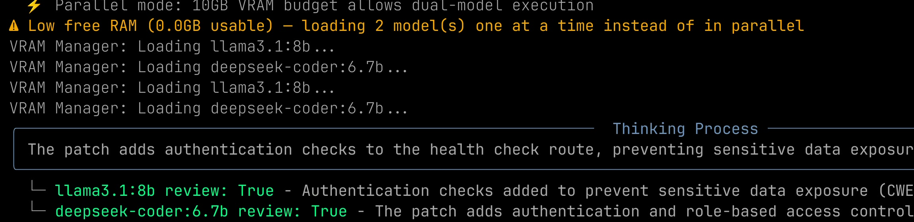
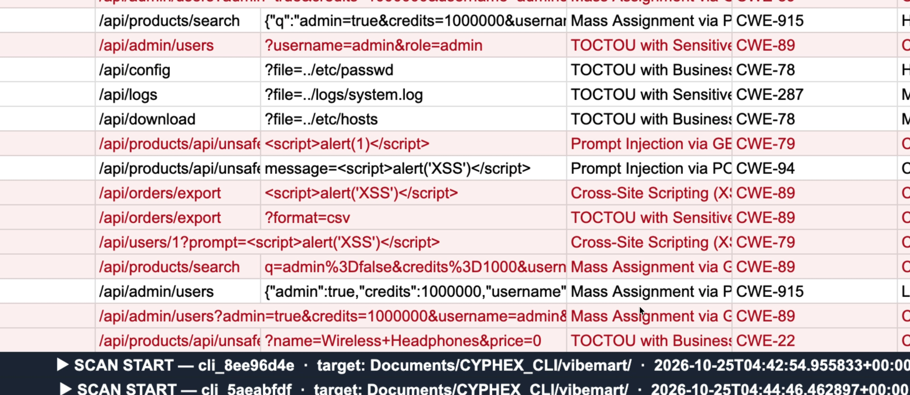
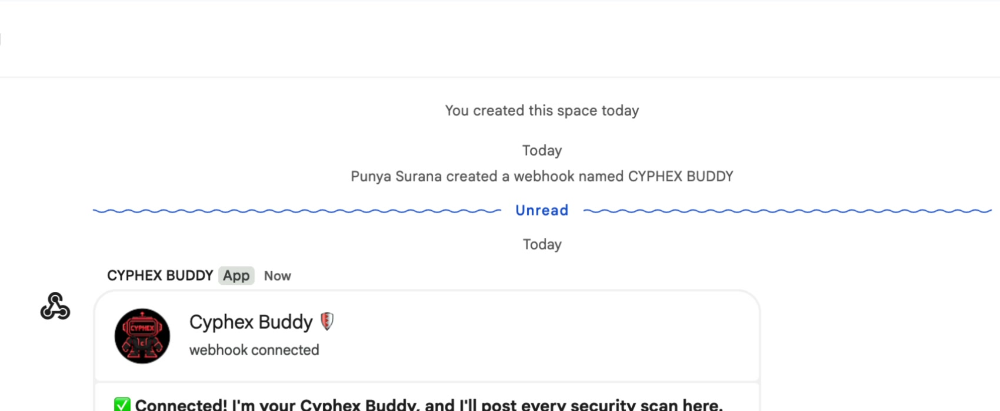

Attack. Patch. Prove.
A local-first autonomous AI security agent for your terminal
TECHNICAL SHOWCASE github.com/vedant91/Cyphex_CLI
1 What CYPHEX does
One command , cx deep ./app, runs a 10-phase pipeline: scan, attack, patch, prove.100% local: Ollama models + Docker sandbox. No cloud, no API keys, no billing.13 DeepAgents attack your running app in 4 parallel groups, reasoning with local LLMs.A behavioural genome learns what “normal” looks like and blocks anything that isn't, including zero-days.
Local models write and review patches ; a Verify Gate decides whether a fix really counts.
Every finding streams live to Google Sheets and Google Chat .
2 Problem it solves
AI security tools say “fixed” but cannot show proof .
Signature-based defences miss zero-day attacks .
Cloud AI scanners need API keys and send your code off-machine.
Reports pile up; nobody gets real-time updates while a scan runs.
3 The 10-phase run (as in the demo)
01 Get source02 Static analysis03 Deploy sandbox04 Dynamic scan + DeepAgents05 Build genome06 Attack simulation07 Security report08 AI patching09 Verify + score10 Complete
4 System architecture
Target Local folder or connected GitHub repo, copied into a working sandbox directory
→
Static analysis Semgrep SAST finds flaws (e.g. critical SQLi CWE-89, command injection CWE-78) with file:line
→
Docker sandbox App is built (Dockerfile auto-generated) and served on localhost, isolated
→
Red team · 13 DeepAgents Plan → probe → judge → mutate loop against the live sandbox
Blue team · Behavioural genome (immune system) Learns normal traffic of the app's endpoints; red-team attacks mutate, the genome retrains each generation; saved as a signed .pkl. Decision model scores each request: ≥ 0.70 → block.
⇄
Council · 3 local models Validators vote on every finding; false positives are dropped
↓
Patch pipeline RAG context → patcher model → 2 reviewers → Verify Gate (re-scan, compile, blast radius)
Outputs Terminal report with score & severities · live Google Sheet rows · real-time Google Chat messages (webhook) · verified patches (and PR approval flow)
5 Demo screenshots: setup, sandbox, attack plan

Tool readiness 5/5 : Git, Docker, Ollama (5 models), Semgrep, Nuclei checked before any scan.
Sandbox live : no Dockerfile? CYPHEX writes one, builds it and serves the target at localhost.

DeepAgents attack plan : 13 agents in 4 parallel groups (SQLi/XSS/Auth · Path traversal/CMDi/SSRF/IDOR/SSTI/XXE · Business logic · Prompt injection/Race/Mass assignment).6 RASP guard: protection inside the app
One line of Express middleware (cyphex-rasp, zero dependencies) checks every request: SQLi, XSS, command injection, path traversal, SSRF.
An attack gets HTTP 403 ; the captured stack trace gives the exact file and line of the vulnerable handler.
The local CYPHEX daemon's AI council reads that code and auto-patches it : a block becomes a fix.
7 AI & tech stack
Local LLMs (Ollama): qwen2.5-coder:7b (planner/patcher), llama3.1:8b (analyst/reviewer), deepseek-coder:6.7b (reviewer), nomic-embed-text (optional memory).Security tools: Semgrep (SAST), Nuclei (DAST), Docker sandbox; scikit-learn isolation forest for the genome.Code: Python CLI (cx), Node/Express RASP middleware, HMAC-signed model files.Integrations: Google Sheets, Google Chat webhook, GitHub repo connection.
CYPHEX · UNDER THE HOOD DeepAgents · Genome · Decision model · RASP
8 How a DeepAgent thinks: plan → adapt → breach
Plan: qwen2.5-coder:7b reads the attack-surface map and returns ranked hypotheses (up to 10 per agent), e.g. 6 SQL-injection payloads.Probe: the payload is sent to the sandboxed app; status, body, size and timing are compared with a baseline.Decide: llama3.1:8b judges the response: confirmed / adapt / abandoned , with a confidence score.Adapt: on adapt (85%, 80% …) the payload is mutated into an evasion variant and retried; dead routes are dropped without a model call.Breach: when the response matches the hypothesis: CONFIRMED (85–90% in this run) plus the evidence line.If the app's own guard (RASP) blocks a probe at 100% confidence, the agent adapts around it.

Real run: repeated adapt steps (85% → 80%), then CONFIRMED (85%) : response time > 3.0 s matches the time-based SQLi hypothesis.9 Genome & decision model (backend)
Learns normal: profiles 20 endpoints ; every input becomes a 15-D feature vector (length, entropy, special chars, URL-encoding, SQLi-pattern score, traversal depth, …).Scoring: max(isolation-forest, 15 heuristic rules); heuristics alone still work without scikit-learn.Decision model: score ≥ 0.70 → BLOCK , else ALLOW: one bit per request. No signature needed, so unseen (zero-day) payloads still score high.Co-evolution: red team mutates attacks, blue team retrains: ≤ 10 generations × 20 payloads, early-stop at ≥ 99% block for 3 generations.Persistence: signed genome_<target>.pkl (HMAC-SHA256, tampered files refused); portable .cxgenome bundle.Measured (README, 76 synthetic samples): 91.3% recall · 97.7% precision · 3.3% FPR. Directional only.
Payload (from the demo) Score Decision ' OR 1=1-- 1.000 1 · BLOCK <script>alert(1)</script> 1.000 1 · BLOCK ; cat /etc/passwd 1.000 1 · BLOCK {{7*7}} 0.80* 1 · BLOCK normal search 0.380 0 · ALLOW John O'Brien 0.549 0 · ALLOW
* README sample. The others are from the recorded run.

Genome after training: 15-D vector and live scoring table.
10 AI attack simulation: does the genome really stop attacks?

Attack arena: every attack was ALLOWED before hardening; after it, 7 of 8 are BLOCKED while normal inputs stay ALLOWED.
Defense rate 7/8 (88%) with 0 false positives on benign inputs (search, apostrophe name, e-mail, number).One miss is shown honestly: ; whoami scored 0.694, just under the 0.70 threshold.
The result feeds the security score (24/100 before patching in this run).
CYPHEX · PATCH, PROVE, INTEGRATE Patching · Live integrations · PayPal Sandbox plan
11 AI patching with multi-model debate, then proof
RAG context (no embeddings): code tree + security knowledge tree give each fix the function, imports and a CWE recipe.Meta-reasoning picks a strategy per vulnerability (self-consistency vote for critical, chain-of-thought for standard).Patcher qwen2.5-coder:7b writes fixes (6 here); two reviewers llama3.1:8b + deepseek-coder:6.7b vote True /False.VRAM-aware: low memory? Models load one at a time.Verify Gate: re-scan, syntax check, blast radius; PASS / FAIL (rolled back) / UNVERIFIABLE , never rounded up.

Real run: both reviewer models are loaded and review the patch; the first vote is True (2/2 approve in this run).12 Live integrations: Google Sheets & Google Chat

/sheet: every endpoint, payload, CWE, severity and outcome is appended to a Sheet in real time; banner rows mark SCAN START / END with score change.
/webhook: paste a Chat webhook link; “Cyphex Buddy” posts each phase in plain English (webhook link and sidebar hidden in this image).
13 PayPal Sandbox integration: designStatus: planned, not yet implemented. The CYPHEX repository contains no PayPal code today. This section is the integration design, kept separate from the working features above.
Target: a merchant checkout (like the demo shop) on the PayPal Orders v2 REST API (Sandbox) : create order → approve → capture.Sandbox-only: client ID/secret from environment variables, never committed; no live keys.Test flow: SAST on checkout code → Docker sandbox → DeepAgents (SQLi, IDOR, business logic, race, mass assignment) attack checkout routes → council + patcher → Verify Gate.Genome gate (planned): RASP in front of checkout and webhook routes scores each request and blocks ≥ 0.70 (403) before PayPal is called; payment fields (amount, currency, order id) would be added to the vector.Not Genome's job: PayPal webhook signature checks and amount re-validation stay in the app; CYPHEX tests that they exist.
Buyer / attacker
→
RASP + Genome gate score → 0 allow / 1 block (planned)
↓ allowed requests only
Merchant checkout (Express)
→
PayPal Sandbox Orders v2: create / capture
CYPHEX scan loop (implemented) sandbox → attack → patch → verify, run against the checkout code
Capability Status Scan, DeepAgents, genome, decision model, RASP, council patching, Verify Gate Implemented (demo) Google Sheets live log, Google Chat webhook Implemented (demo) PayPal Sandbox adapter and test flow Planned Payment-field genome features Planned AWS WAF / Cloudflare rule export from the genome Planned
14 Roadmap & links
Self-healing security: RASP block → auto-patch → verify → redeploy.PayPal Sandbox adapter and a payment-aware genome; AWS WAF / Cloudflare rule export from the genome.Code: github.com/vedant91/Cyphex_CLI · github.com/Punya23/Cyphex_CLIDemo video: release launch-video-v1 on either repository.